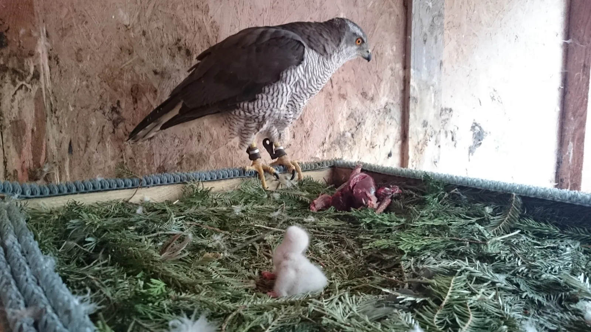

Podmienky pre sokoly
Sokoly hniezdia v priestranných voliérach s odsadávkami. Hniezdnu podložku alebo búdku majú vysypanú štrkom – sokoly si hniezdo nestavajú.
Odchov a edukácia
Projekt SOKOL – edukácia odchovu dravých vtákov približuje deťom a verejnosti vznik života od úplného začiatku: rozmnožovanie, liahnutie, výchovu mláďat a ich vypustenie do voľnej prírody.

Projekt SOKOL
Projekt SOKOL – edukácia odchovu dravých vtákov približuje deťom a verejnosti vznik života od úplného začiatku: rozmnožovanie, liahnutie, výchovu mláďat a ich vypustenie do voľnej prírody.
Realizuje ho občianske združenie Divé krídla, ktoré sa venuje ochrane dravých vtákov a ich prostredia.
Od 18. storočia počty dravých vtákov postupne klesali. V druhej polovici 20. storočia ich však najviac zasiahlo používanie vysoko jedovatých prípravkov na ochranu rastlín, hnojív a ďalších chemikálií. Dravce stoja na konci potravového reťazca, preto ich počty klesli až na hranicu prežitia.
Po zákaze niektorých látok sa stavy časti druhov zlepšili, populácie iných sú však také malé, že potrebujú pomoc aj formou umelého odchovu a následného vypustenia do voľnej prírody.
Príprava a podmienky chovu
Úspešný odchov sa začína dávno pred znesením prvého vajca. Pri chovných dravcoch sledujeme najmä ich vek, kondíciu (lietanie) a stravu.
Sokoly hniezdia v priestranných voliérach s odsadávkami. Hniezdnu podložku alebo búdku majú vysypanú štrkom – sokoly si hniezdo nestavajú.
Jastraby dostanú hniezdnu podložku alebo starú pneumatiku vystlanú čečinou zo smreka.
Hniezda sledujeme kamerami, aby sme vtáky počas sedenia na vajciach a kŕmenia mláďat zbytočne nevyrušovali.
Prirodzený a umelý odchov
Pár sa spáruje sám, samica znesie vajcia, sedí na nich a obaja rodičia sa potom starajú o mláďatá.
Dravce odchované človekom sa naňho v prvých troch týždňoch vtlačia (imprinting) a niekedy sa nedokážu prirodzene rozmnožovať s partnerom vlastného druhu. Vtedy sa od samca odoberá semeno, kontroluje sa pod mikroskopom a samica sa umelo oplodní.
Etapy odchovu
Fotografie sa otvoria v galérii, videá sa prehrajú po kliknutí v samostatnom okne.
Odchov sa začína už pri rozmnožovaní. Jeho súčasťou je aj práca s mikroskopom.
Vajcia v hniezde a v inkubátore. Väčšina dravcov začne vajcia zahrievať na 36,5 – 37,5 °C až po znesení celej znášky, dovtedy ich len temperuje na 14 – 16 °C. Vývoj života vo vajci sa priebežne kontroluje digitálnym monitorom.
Keďže sa vajcia začínajú zahrievať naraz, mláďatá sa vyliahnu v priebehu jedného dňa. Pri niektorých druhoch, napríklad orlovi skalnom či krikľavom, sedí samica na vajciach už od prvého vajca, a tak medzi mláďatami vzniká citeľný rozdiel vo veľkosti.


Čerstvo vyliahnuté mláďatá sa vyhrievajú pod lampou alebo na vyhrievacej podložke v odchovni a dokrmujú sa pinzetou.
O mláďatá sa ďalej starajú rodičia – samica jastraba ich zahrieva a kŕmi kúskami mäsa.
Cieľom odchovu je vypustenie dravých vtákov do voľnej prírody.

Mláďatá z odchovu
Mladé jastraby a sokoly od prvého páperia po odrastené mláďatá pripravené opustiť hniezdo.
Na čo si dať pozor
Drobnosti, ktoré rozhodujú o tom, či z mláďaťa vyrastie zdravý dravec.
Mláďatá dostávajú čerstvé, správne rozmrazené mäso v malých kúskoch. Holuby a zver pred kŕmením zmrazujeme a neskrmujeme hlavy holubov, ktoré môžu prenášať infekcie.

Nedostatok vitamínu D spôsobuje rachitídu mláďat. Vitamín D vzniká v tele pôsobením slnečného žiarenia, preto je pre mláďatá dôležitý pobyt na slnku.

V prvých troch týždňoch si mláďa zafixuje, kto sa o neho stará. Ak ho v tom čase kŕmi človek, naviaže sa naňho a považuje ho za svoj druh.

Mláďatá z odchovu sa označujú krúžkami, podľa ktorých sa dá každý jedinec spoľahlivo identifikovať.
Nestrávené zvyšky potravy dravec vyvrhne ako vývržok. Kým ho nevyvrhne, ďalšiu potravu nedostane.
Chovný pár
Samica: pôvod Rakúsko, vyliahnutá v roku 1992; aj pred zaradením do projektu každoročne odchovala niekoľko mláďat. CITES.
Samec: pôvod Nemecko, vyliahnutý v roku 2006; lietaný na vábidlo a používaný na sokoliarsky lov. CITES.
Sokol rároh
Sokol rároh si nestavia hniezdo, ale využíva hniezda iných druhov alebo skalné dutiny. Od roku 2000 Štátna ochrana prírody SR podporuje projekt „Stožiare vysokého napätia pre záchranu najväčších stredoeurópskych sokolov“, v rámci ktorého sa na stožiare osádzajú hniezdne búdky. Hniezdenie začína v februári svadobnými letmi; približne od polovice marca znáša samica 3 až 6 vajec, na ktorých sedí asi 30 dní. Starostlivosť o mláďatá na hniezde trvá približne 45 dní a vyletujú od konca mája do konca júna. Pohlavne dospievajú v druhom až treťom roku života.
Projektový zámer je realizovaný s finančnou podporou Zeleného vzdelávacieho fondu 5/2023 formou dotácie z Environmentálneho fondu.
Ako prebieha samotné vypúšťanie mladých sokolov v meste?
Metodika vypúšťaniaĎalšie stránky